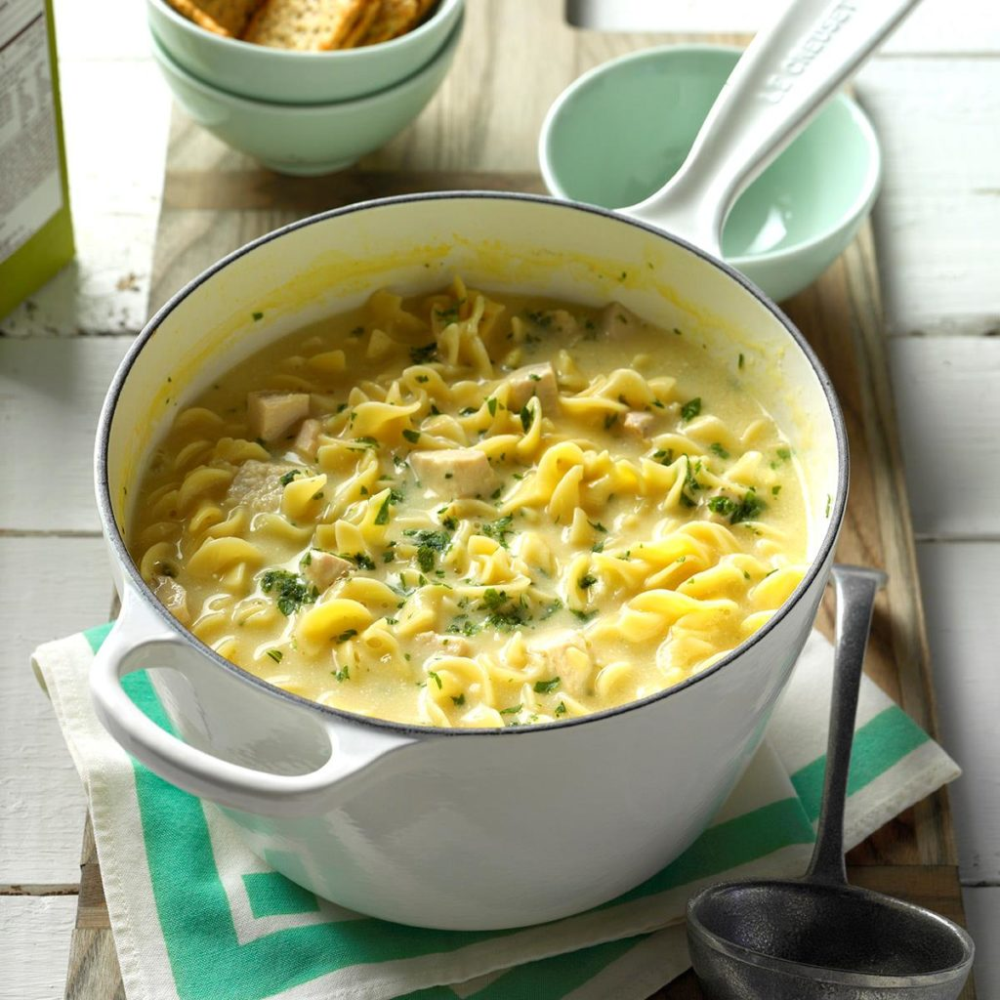

Comforting Chicken Noodle Soup
Ingredients
2 quarts water
8 teaspoons chicken bouillon granules
6-1/2 cups uncooked wide egg noodles
2 cans (10-3/4 ounces each) condensed cream of chicken soup, undiluted
3 cups cubed cooked chicken
1 cup sour cream
Minced fresh parsley
Directions
- In a large saucepan, bring water and bouillon to a boil. Add noodles; cook, uncovered, until tender, about 10 minutes. Do not drain. Add soup and chicken; heat through.
- Remove from the heat; stir in the sour cream. Sprinkle with minced parsley.
Nutrition Facts
1 cup: 218 calories, 9g fat (4g saturated fat), 67mg cholesterol, 980mg sodium, 18g carbohydrate (2g sugars, 1g fiber), 15g protein.
Total Time
Prep/Total Time: 25 min.